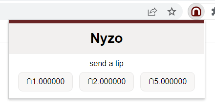
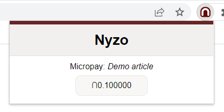
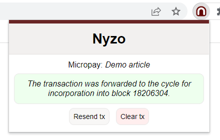

Several classes of functionalities have been developed with Micropay: tips, content sales, unsupported applications using structured metadata, and supported applications with Nyzo scripts.
Tips Content sales Unsupported applications Supported applicationsTo allow users to send tips to you, first create an HTML element with the class nyzo-tip-button.
<div class="nyzo-tip-button">
</div>
Add the following data fields to the element:
With these fields, the element will look similar to the following.
<div class="nyzo-tip-button"
data-client-url="https://
data-receiver-id="id__8cdasP
data-tag="thank you for the content!">
</div>
When the Nyzo extension loads, it searches for all elements of the class nyzo-tip-button. In addition to loading the data fields of these elements, the extension removes the nyzo-extension-not-installed class and adds the nyzo-extension-installed class.
So, while not required, one may wish to add the nyzo-extension-not-installed class to a Nyzo tip element:
<div class="nyzo-tip-button nyzo-extension-not-installed"
data-client-url="https://
data-receiver-id="id__8cdasP
data-tag="thank you for the content!">
</div>
When the extension loads, the element above would change to:
<div class="nyzo-tip-button nyzo-extension-installed"
data-client-url="https://
data-receiver-id="id__8cdasP
data-tag="thank you for the content!">
</div>
Please note that the nyzo-extension-installed class will be added to all elements of the nyzo-tip-button class, regardless of whether the nyzo-extension-not-installed class is also present.
Also, please note that the extension processes all elements of the nyzo-tip-button class. If multiple elements with valid data-client-url and data-receiver-id fields are found, the last element that the extension encounters will be used for the tip configuration that is presented to the user. To avoid potentially confusing behavior, we recommend that pages are written according to one of the two following rules:
When the Nyzo extension finds a correctly configured Micropay tip button, the extension will present a tip option in the popup menu. Tip amounts are determined by the user in the options menu. The user sets a base tip amount, and the extension provides buttons with values of 1x, 2x, and 5x the user-specified amount.
To allow users to purchase content with Nyzo Micropay, first create an element with the class nyzo-micropay-button.
<div class="nyzo-micropay-button">
</div>
Add the following data fields to the element:
With these fields, the element will look similar to the following.
<div class="nyzo-micropay-button"
data-client-url="https://
data-receiver-id="id__8cdasP
data-amount="0.1"
data-display-name="Demo article"
data-tag="article">
</div>
When the Nyzo extension loads, it searches for all elements of the class nyzo-micropay-button. In addition to loading the data fields of these elements, the extension removes the nyzo-extension-not-installed class and adds the nyzo-extension-installed class.
So, while not required, one may wish to add the nyzo-extension-not-installed class to Nyzo Micropay elements:
<div class="nyzo-micropay-button nyzo-extension-not-installed"
data-client-url="https://
data-receiver-id="id__8cdasP
data-amount="0.1"
data-display-name="Demo article"
data-tag="article">
</div>
When the extension loads, the element would change to:
<div class="nyzo-micropay-button nyzo-extension-installed"
data-client-url="https://
data-receiver-id="id__8cdasP
data-amount="0.1"
data-display-name="Demo article"
data-tag="article">
</div>
Please note that the nyzo-extension-installed class will be added to all elements of the nyzo-micropay-button class, regardless of whether the nyzo-extension-not-installed class is also present.
When the Nyzo extension finds a correctly configured Micropay payment button, the extension will present the payment option in the popup menu.
When the user clicks the payment button, a transaction is generated and sent to the Nyzo client at the URL indicated by the data-client-url attribute of the Micropay button. If the client accepts the transaction, a success message is displayed.
When the client accepts a transaction, the extension sends that transaction back to the page along with a supplemental transaction with an amount of ∩0.0. The transaction can then be presented by the page to the web server to prove that payment was made for the content. The supplemental transaction, which is always generated on demand with a recent timestamp, can be used to provide reasonable certainty that the user sending the transaction holds the private key of that transaction. Without this supplemental transaction, a user could watch the blockchain for specific Micropay transactions and then potentially reuse those transactions to obtain content.
At this point, the page interacts with the web server providing Nyzo Micropay content. So, the rest of the process can proceed as the content web server chooses. The Nyzo documentation server provides a reference implementation of Micropay content delivery, and this documentation repository provides examples of an article, an image, and multiple items on one page purchased with the Micropay mechanism. To demonstrate how a single payment can be used to authorize multiple items on a page, as would be necessary for most typical web pages, the complex article example was added.
In the reference implementation, the page listens for the transaction from the extension and uses that transaction to request Micropay content.
document.addEventListener('micropayTransactionAvailable', function(event) {
if (!is
var transaction = event.
var supplemental
requestMicropayResource(transaction, supplementalTransaction);
}
});
The request
function request
// Get the installed button. Set it to a "requesting..." state.
const installed
installed
installed
const http
http
if (this.
if (this.
document.
document.
document.
} else {
if (this.
installed
'the payment from the Nyzo extension and try again.';
} else {
installedButton.innerHTML = 'An error occurred. Please try sending the
payment again.';
}
installedButton.classList.add('error-button');
}
}
};
httpRequest.onerror = function() {
installedButton.innerHTML = 'An error occurred. Please try sending the payment
again.';
installedButton.classList.add('error-button');
}
var full
supplemental
http
http
}
On the documentation server, any resource can be configured to require payment by adding a file with the extension
.micropay and the same name as the resource file. So, to require payment for the file
nyzo_
# This file contains the parameters necessary for Micropay. The "price" and "receiver_
# required. The "sender_
# transactions to the receiver with an appropriate amount will authorize delivery of content.
# "price" is specified in nyzos
price=0.2
# "receiver_
receiver_
# "sender_data" is either a UTF-8 string or a normalized sender-data string
sender_
As is obvious, the octothorpe is used for comments. The price denotes the minimum
price that will be accepted as payment for a resource. This is specified in Nyzos. The
receiver_
While the Nyzo documentation server does not support additional flexibility in acceptance of Micropay transactions, other servers could process transactions however they choose.
When the documentation server receives a request for a Micropay-enabled resource, it confirms the following before delivering the resource.
All of these are confirmed with information provided by a Nyzo client in a JSON response from the
/api/
If the documentation server confirms all of the above criteria in a request for a Micropay-enabled resource, the resource is delivered with a 200 (OK) (OK) status code. If any of the criteria are not met, a textual error describing the problem is returned with a 402 (Payment Required) status code. In version 629 of the Java codebase, the feedback provided for failed payments was improved substantially.
Unsupported applications are those that store application data on the blockchain but utilize no further resources in the Nyzo ecosystem. Typically, such applications are simple or require a supplemental data store.
The first unsupported application example was a simple game, tic-tac-toe. This game has such a small state space that a game identifier, along with the full state of the game, fits easily as plain-text sender data.
The second unsupported application, the vault example, shows how content can be registered and verified on the Nyzo blockchain. In its current state, it is fully functional for establishing provenance of digital material. The data on the blockchain can definitively verify any data that is presented, or it can definitively show that a specific digital asset was never registered at a precise URL.
The first supported application, the graffiti example, allows users to draw collaboratively. The state is maintained by the Nyzo client.
For more details on how supported applications work, read the NyzoScript documentation.